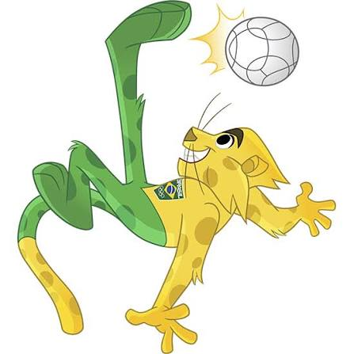

Meu primeiro post
Boas-vindas ao meu novo blog! Aqui eu vou falar sobre curiosidadesdo futebol.
Por: andré

Vou compartilhar conhecimentos sobre tecnologia e programação
Boas-vindas ao meu novo blog! Aqui eu vou falar sobre curiosidadesdo futebol.
Por: andré

Olha essa ilustração detalhada do nosso mascote do brasil olímpico!
Por: andré
Site em desenvolvimento por andré